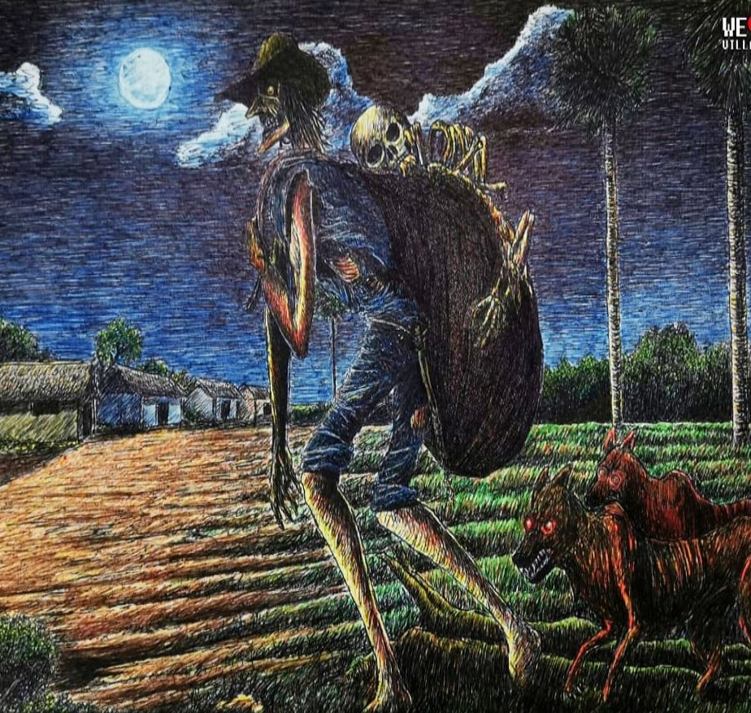

En esta pagina descubriras las historias mas tetricas y aterradoras jamas contadas leyendas y hechos aterradores te mostraremos el lados mas oscuro de este mundo,espero que te deleites con nuestro contenido

EL SILBON
Venezuela es un país con muchas creencias populares, historias de fantasmas y casos peculiares que pueden erizarte la piel. Ya sea en los llanos, las ciudades, las lejanas y misteriosas montañas, la selva amazónica o incluso en las orillas del mar encontrarás historias que te pondrá los pelos de punta con sólo conocerlas.
Esta leyenda relata la historia de un joven llanero que asesinó a sus padres y está condenado a vagar eternamente con un saco lleno de los huesos de sus progenitores, se dice que mientras más cerca se escucha su popular silbido, más lejos está y mientras más lejos lo escuches más cerca está.
El silbon asesinó a su padre y lo destripó por haber asesinado a su esposa diciendo que era una «mujerzuela» y que se lo había buscado, en el momento del homicidio llegó su abuelo, y lo maldijo por haber matado a su padre alegando “Eso no se le hace a su padre…Maldito eres, pa´ toa´ la vida”.
Según la historia, este espectro llanero puede llegar a una casa en horas de la madrugada, descarga su saco de huesos y se pone a contarlos uno a uno. La leyenda se originó a mediados del siglo 19 en los llanos venezolanos, particularmente en la región de Guanarito, estado Portuguesa extendiéndose también a los estados Apure y Guárico.
Escrito por Amilcar Rodriguez